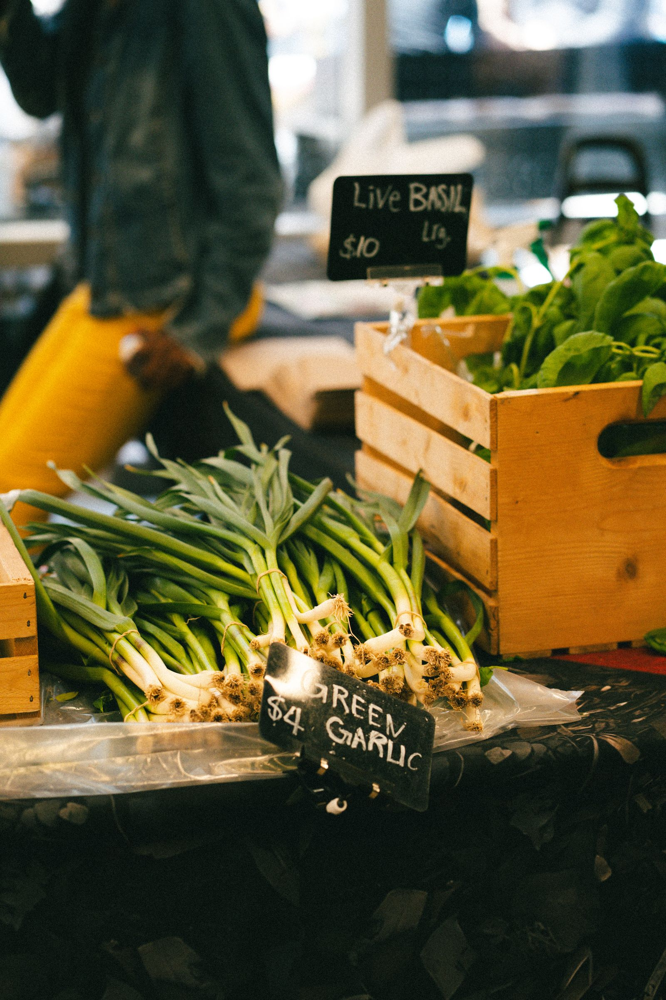

The host · Marge Fenwick
I grew up over a greengrocer's. The market is the same job, outdoors.
My parents kept the greengrocer's on Battle Hill, and I grew up in the flat above it, weighing potatoes before I could reach the till standing flat-footed. I ran that shop myself from 2003 until 2018, when the lease went the way leases go. The next spring the town's market licence came up, the old host was retiring, and I took it on with fourteen pitches, a borrowed generator and strong opinions.
Seven seasons on, the market has 30 pitches, mains power in proper cabinets and a ledger anybody can read. What hasn't changed is the job as I see it: a market host is not an events person. I am the person who decides where you stand, what you may sell, whether you trade in the rain — and who answers the phone when any of it goes wrong. The traders don't need me on the good Saturdays. They need me on the Thursday the field floods.
I vet every stall in person before it enters the ledger: I visit where the food is made or the craft is worked, I taste and handle what's coming, and I check the paperwork a visitor never sees — food hygiene ratings, insurance, allergen labelling. It takes an afternoon per trader. It is why the ledger can be short and the market can be trusted.

House rules
The rules every stall trades under
Printed in the ledger, repeated at the traders' meeting in September, and enforced by me on the day — including against my favourites.
- The forty-mile rule. Produce is grown, and craft is made, within forty miles of the Abbey. Traders tell me the farm or the workshop when they apply, and I visit both. Bought-in stock is the fastest way off this market.
- One of each. No two stalls sell the same main line. If the market has a cheese stall, it has one cheese stall, and the next cheesemaker joins the waitlist, not the row. Traders price against the supermarkets, not against each other.
- Prices up. Every item priced where a visitor can read it without asking. A market is not an auction, and nobody should have to perform interest to learn what lunch costs.
- The corner pitch is not a prize. I place stalls by footfall, not by seniority or fee: new traders start third from the gate, where hands are empty and people have slowed down. Corners go to the stalls people seek out on purpose — the cheese, the bread — because their customers will find them anywhere.
- The 6 a.m. weather call is mine. Trade, trade wrapped, or called off — one text, before anyone loads a van. If I call a day off, the fee rolls forward or comes back. If I call it on and the weather turns, that is on me too, and the hot drinks at A1 are on the market.
- Power and water are market kit. Two mains cabinets went in during 2022, so no generator runs on the ground; standpipes stand at both ends of Row B. Hook-ups are tested at set-up, by me, with the trader watching — a tripped stall at ten o'clock is a host's failure, not a trader's.
Season calendar
The 2026 autumn season — 12 market days
Gates open 09:00, close 16:00, unless the day says otherwise. Harvest Home opens the season; the Night Market closes it.
| Sat 3 October | Harvest Home — opening day. The full ledger trades; the sheaf is carried down Row B at nine. |
| Sat 10 October | Market day — apple and orchard week on Row B. |
| Sat 17 October | Market day. |
| Sat 24 October | Market day — the mushroom stalls lead the Long Row. |
| Sat 31 October | Market day — lanterns and the first wreaths on Row C. |
| Sat 7 November | Market day. |
| Sat 14 November | Market day. |
| Sat 21 November | Market day — preserves and pickles for the store cupboard. |
| Sat 28 November | Market day — first Christmas lists on the Abbey Wall, and B7 and B9 trade their last day of the season. |
| Sat 5 December | Market day — two standard pitches open (B7, B9 finished in November). |
| Sat 12 December | Market day — the last full Saturday of the season. |
| Fri 18 December | Christmas Night Market — 16:00 to 21:00, Beaumont Street closed, festoon lights, hot food on Row A. The season closes here. |
Rules you could trade under?
If your stock is grown or made within forty miles and you'd take a pitch third from the gate, we should talk.